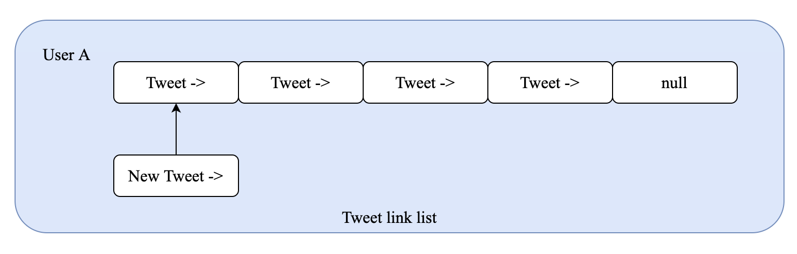

In this lab, you will use the Link List to design a simple Twitter. Please download the skeleton code firstly. It is better to read this lab page and skeleton code together.
The skeleton.zip inludes:
Real Twitter maintains several users, and each user has an id. User behaviour includes:
1. Post a tweet.
2. Follow other users.
3. Get the several most recent news feeds from himself and the following users.
In this lab, we will try to design a simple Twitter, which allows users to perform all four actions described above. The skeleton code provides a basic structure of Twitter, and you only need to fill your code in a fixed position (between "Your code begin at here" and "Your code end at here" in myTwitter.cpp).
In this section, we will describe the key variables or structures to help you understand the skeleton code.
struct Tweet:
Maintain a tweet send by one User. Each Tweet includes a timestamp and a tweet_id. Structure Tweet is actually a Link list and it contains Tweet *p_next_tweet to point to the next structure Tweet.
Tweet.timestamp: Represents the time it was sent. The skeleton code will maintain a globle time (int current_time in myTwitter.cpp) and assign this attribute aotumatically.
Tweet.tweet_id: Consists of user_id and timestamp and the first number of a tweet_id is the user id. Example: User 1 send a tweet at time 10, then the tweet id is 1010; User 2 send a tweet at time 11, then the tweet id is 2011.
Tweet.p_next_tweet: Point to next node of the link list.
struct User:
Maintain user information, which includes user_id, link list of Tweet and users who are following.
User.self_id: The id of user, vary from 0 to MAX_USER-1.
User.p_my_tweets_head: The head node of link list (Tweet).
User.followings_size: The size of following users, vary from 0 to MAX_FOLLOWEE.
User.followings[MAX_FOLLOWEE]: An array of structure User, which represents the users who are following. Note: Only elements with index less than followings_size are valid (Exp: followings_size=2, User.followings=[A, B, NULL, NULL, ...])
Goal: Determines if the specified user has sent a tweet (actually determines whether a given linked table is empty or not).
Input: user_id: int, must smaller than MAX_USER. Used to get the User in UsrList
Return: True (empty) or False (not empty)
Hint: Use UsrList[user_id].p_my_tweets_head to visit the head node of user's tweet link list.
Goal: Post a tweet for a given user (actually add a link node to the link list).
Input: user_id.
Return: None.

The skeleton code will help to create a new Tweet (new link node). You just need add the new node to the front of current link list. As shown in the picture above, the new node should point to the current head node.
Description:
One main function of real Twitter is to display several most recent news feeds from the user A and following users of A. For example, user 1 is following user 2 and 3. Then, user 1 can see several most recent news feeds from user 1, 2 and 3. In Task 3, we will try to implement this function according to the timestamp of each Tweet (A larger timestamp means that the Tweet was sent more recently). In Twitter.h, max_recent_num means the total number of recent news feeds which need to be displayed.
An example shows as above, and the number is tweet_id, which is described at struct Tweet. User 1 is following User 2 and 3, and Twitter will show 4 most recent news feeds. According to the timestamp of each Tweet, the Twitter will show 3007, 1006, 2005 and 1004 in order. In this task, we just need to output the tweet_id of 5 most recent news feeds (max_recent_num=5). Other examples you can find in Section Implementation.
Hint: If postTweet in Task 2 is implemented correctly, the most recent tweets will be distributed in the front of each link list. Therefore, we can start with a set of head nodes and find the tweet with max timestamp.
In this section, I will describe how to compile main.cpp and check your code by yourself.
Step 1: Open the terminal, and change the current path to skeleton files (./skeleton_my_twitter/). Use command "pwd" (in Linux or MacOS) or "chdir" (in Windows) to check your current path.
Step 2: Input "g++ -std=c++11 myTwitter.cpp main.cpp -o test" in your terminal to compile.
Step 3: Input ./test to run the test code.
The above process compiles both myTwitter.cpp and main.cpp together, but you can also use other methods such as "make" to compile.
How to debug
Compare your results with the results in Section Expected Output.
The content of tweet.txt refers to the sender id of each tweet and the order in which it is sent. Each line in following_relationship.txt means that user A is following user B. You can try modifying these two files to help you debug your program.
Contents in tweet.txt:
2
4
1
1
1
2
2
3
2
4
3
2
3
1
2
2
3
Contents in following_relationship.txt
1 2
1 4
Sample output:
******************************************
All tweets in current myTwitter:
******************************************
Tweet of user 0 is empty.
Tweets of user 1: 1014 1005 1004 1003
Tweets of user 2: 2016 2015 2012 2009 2007 2006 2001
Tweets of user 3: 3017 3013 3011 3008
Tweets of user 4: 4010 4002
******************************************
Recent news feed of user 1:
******************************************
Current time is: 18
You should display recent 5 tweets
2016
2015
1014
2012
4010
Each lab carries 3 points in total.